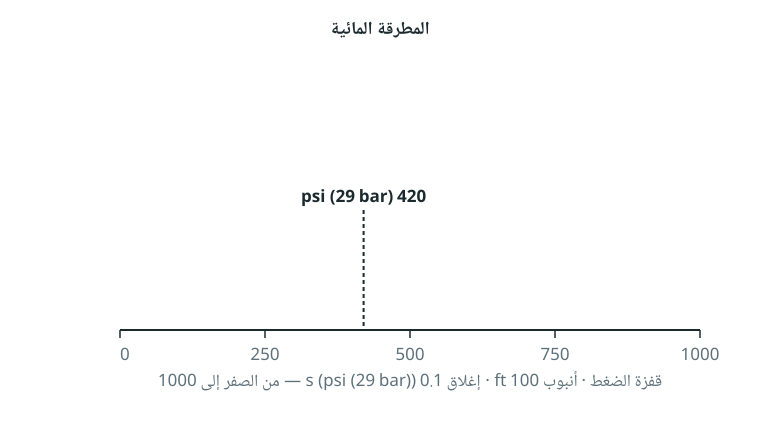

المطرقة المائية
Water Hammer (Hydraulic Transient)
قفزة ضغط عابرة تنشأ حين يتغيّر تدفّق سائل في أنبوب بسرعة أكبر من الزمن اللازم لاستقرار الموجة.
المطرقة المائية ظاهرة انتقال عابر في أنابيب السوائل: كل تغيّر مفاجئ في التدفّق — إغلاق صمام أو إيقاف مضخة أو اندفاع كبش مائي — يحوّل طاقة الحركة إلى موجة ضغط تنتقل في الأنبوب بسرعة قريبة من سرعة الصوت في السائل، فتظهر في الموضع نفسه قفزة ضغط عابرة قد تبلغ أضعاف ضغط التشغيل. التقدير التقريبي يقوم على معادلة جوكوفسكي Δp = ρ·a·Δv حين يكون الإغلاق أسرع من زمن سفر الموجة ذهابًا وإيابًا (2L/a)، وعلى تقدير يعتمد على زمن الإغلاق Δp ∝ Δv·L/Δt حين يمتد زمن الإغلاق. والنتيجة العملية أن الحدّ الحاسم ليس سرعة الإغلاق وحدها بل نسبتها إلى زمن الموجة: صمام يُغلق في ثانية على أنبوب قصير قد يكون أشدّ أثرًا من صمام يُغلق في عشر ثوانٍ على أنبوب طويل. والمعالجة تكون بأربعة مسارات: تقليل سرعة التصميم (توصي جداول تحجيم الأنابيب بألّا تتجاوز 1.5 m/s في بعض التطبيقات)، وإبطاء الإغلاق أو تقسيمه على مرحلتين، وإضافة خزان تموّج أو ممتص نبضات قريبًا من الصمام، واستخدام صمامات لا ترتدّ سريعًا. ويُفرَّق بين المطرقة المائية وبين مطرقة البخار: الأخيرة تنشأ حين يتكثّف البخار في مقطع أفقي فتتكوّن حوصلة سائل يقذفها البخار في صمام أو وصلة، وقد تُقاس لها ذروات ضغط كبيرة جدًّا خلال أجزاء من الثانية.
كيف تعمل الظاهرة؟
حين يُغلق الصمام تتباطأ الطبقة السائلة الملاصقة له أولًا، فتتحوّل طاقتها الحركية إلى انضغاط في السائل وتمدّد في جدار الأنبوب، وتنتقل هذه الحالة كجبهة ضغط إلى أعلى الأنبوب بسرعة الموجة. وعند الطرف العلوي (خزان أو مضخة) تنعكس الموجة بإشارة معاكسة، فتعود موجة تخلخل قد تُنزل الضغط الموضعي إلى ما دون ضغط بخار السائل فيتكوّن فراغ بخاري ينهار بعدها بسرعة، وهذا الانهيار هو ما يُسمع صوت الطرق ويُنشئ ذروات أعلى من الموجة الأصلية. ولهذا تكون أشدّ المواضع تأثّرًا نقاط التغيير الهندسي: الكوع والوصلة والتفرّع، لا منتصف الأنبوب المستقيم فقط.
العلاقة بالأرقام
المعيار الزمني: إن كان زمن الإغلاق أقصر من 2L/a فالإغلاق فوري حكمًا وتُطبَّق معادلة جوكوفسكي Δp = ρ·a·Δv. بماء ρ = 1000 kg/m³ وسرعة موجة 1000–1200 m/s في أنبوب فولاذي، كل 1 m/s من التغيّر في السرعة يولّد 10–12 bar. فتخفيف السرعة من 3 m/s إلى 1.5 m/s يخفض القفزة إلى النصف مباشرة، وهذا أرخص إجراء تصميمي. والتقدير العملي المبني على الزمن يعطي في المثال المنشور 420 psi لإغلاق 0.1 s و42 psi لإغلاق 1 s على الأنبوب نفسه، أي أن مضاعفة زمن الإغلاق عشر مرات تخفض القفزة عشر مرات في هذا النطاق. وزمن سفر الموجة نفسه يُحسب من الطول: أنبوب 1 km بسرعة موجة 1000 m/s يعطي 2L/a = 2 ثانية، فأي إغلاق أسرع من ثانيتين يُعدّ فوريًّا في هذا الأنبوب.
مفاهيم متقاربة
يُظنّ أحيانًا أن المطرقة المائية سببها الهواء المحبوس، والهواء يغيّر سلوك الموجة (يخفض سرعتها ويخفّف القفزة) لكنه ليس مصدرها؛ المصدر هو عزم السائل. ويُظنّ أن الصمام الكبير أخطر من الصغير دائمًا، والحقيقة أن الحاسم زمن الإغلاق نسبةً إلى 2L/a لا قطر الصمام. والفرق الثالث أن قفزة الضغط العابرة ليست ضغط اختبار الأنبوب: تُقارن بقدرة تحمّل الأنبوب عند الضغط العابر وبمعامل أمان منفصل، وإغفالها هو ما يجعل أنبوبًا مصمَّمًا على 10 bar يتشقّق عند تشغيل مضخة ضغطها 6 bar.
حدود التطبيق
الأول: معادلة جوكوفسكي صحيحة للإغلاق الفوري في أنبوب مفرد منتظم، وتحتاج طريقة الخصائص لشبكات ذات تفرّعات أو إغلاق تدريجي. الثاني: وجود هواء حرّ أو فراغ بخاري يجعل السائل كتلة قابلة للانضغاط، فتنخفض القفزة المحسوبة ويصير النموذج أحادي الطور مضلّلًا. الثالث: سرعة الموجة في الأنابيب البلاستيكية أقل بكثير منها في الفولاذ (نحو 300–500 m/s)، فيطول زمن 2L/a ويصير كثير من الإغلاقات «فوريًّا» حكمًا. الرابع: المواد البلاستيكية الحرارية تتحمّل الذروات أقل من الفولاذ، فحدود الأمان لا تُنقل بين مادتين. الخامس: المطرقة البخارية ظاهرة مختلفة الآلية والزمن، ولا تُقدَّر بمعادلة جوكوفسكي.

| الكمية | القيمة | المصدر |
|---|---|---|
| قفزة الضغط · أنبوب 100 ft · إغلاق 0.1 s | 420 psi (29 bar) | [2] |
| قفزة الضغط نفسها بزمن إغلاق 1 s | 42 psi (2.9 bar) | [2] |
| سرعة التصميم الموصى بها | 1.5 m/s | [1] |
| طاقة حركة في مثال السد | 8,000 MJ | [1] |
| ذروة ضغط مطرقة بخار | 130 bar | [1] |
المصادر
- 1 Water hammer — Wikipedia. en.wikipedia.org/wiki/Water_hammer · اطُّلع عليه 2026-11-28
- 2 Water Hammer — The Engineering ToolBox. www.engineeringtoolbox.com/water-hammer-d_966.html · اطُّلع عليه 2026-11-28
استشهد بهذا المصطلح
الصيغتان مبنيتان من بيانات الصفحة نفسها: العنوان والتاريخ ورابط النسخة المنشورة.
المطرقة المائية — Water Hammer (Hydraulic Transient). (2026). ديوان المعرفة — انفراد. https://infiradev.com/diwan/terms/term-water-hammer.html
@misc{term-water-hammer2026,
title = {المطرقة المائية},
titleaddon = {Water Hammer (Hydraulic Transient)},
howpublished = {{ديوان المعرفة — انفراد} — مرجع علمي عربي},
year = {2026},
url = {https://infiradev.com/diwan/terms/term-water-hammer.html},
urldate = {2026-11-28},
note = {مراجعة علمية: Abdullah Al-Huwaidi}
}
راجعه: Abdullah Al-Huwaidi · 2026-11-28 · آخر تحديث 2026-11-28